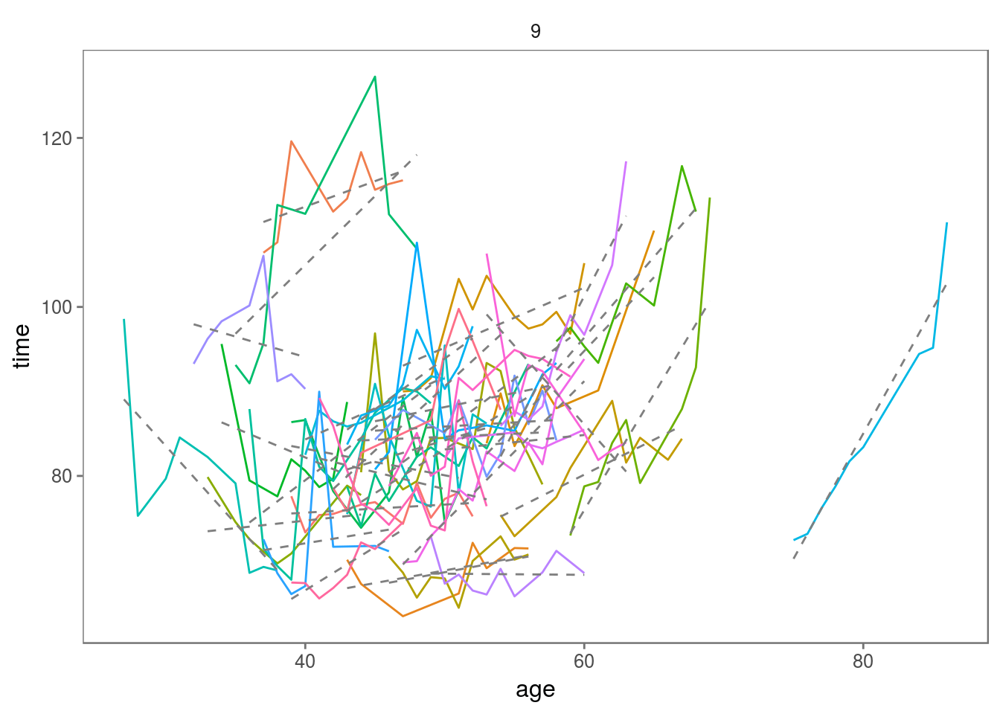

7 Modeling the Change in Running Time for Individuals
The Cherry Blossom race results include recordings for athletes from 20 to 80 years old. However, we don’t have records for any one person that covers this 60-year span. That’s not possible because we have only 14 years of race results so we can at most observe a 20 year old until he turns 33 or an 80 year old when he was 67. This means when we examine the performance of an individual over time, we are looking at short time series that are at most 14 years long. To examine performance from 20 to 80 necessarily means that we rely on the cross-sectional aspect of the data, but there is information to be gleaned in these short time series.
It’s reasonable to imagine that over a short period of time, say 8 to 10 years, a runner’s performance is roughly linear with age. (We saw this with the piecewise linear model for the cross-sectional data). We can make plots to ascertain if this is the case. We have over 300 runners to plot so to limit the effect of over plotting, we make several plots of different subsets of the data. We begin by dividing the runners into 9 groups to make 9 plots in a 3-by-3 grid. We assign roughly the same number of runners to each group with
men8 <- men8 %>%
mutate(group = group_indices(., id) %% 9 + 1)and we can plot it with one call to ggplot().
ggplot(men8, aes(age, time, color = id)) +
geom_line(show.legend = FALSE) +
facet_wrap( ~ group)Figure 7.1: Run Times for Multiple Races. These line plots show the times for male runners who completed at least 8 Cherry Blossom races. Each set of connected segments corresponds to the run times for one athlete. Looking at all line plots, we see a similar shape to the overall scatter plot, i.e., an upward curve with age. However, we can also see how an individual’s performance changes. For example, many middle-aged runners show a sharp increase in run time with age but that is not the case for all. Some of them improve and others change more slowly.
![Run Times for Multiple Races. These line plots show the times for male runners who completed at least 8 Cherry Blossom races. Each set of connected segments corresponds to the run times for one athlete. Looking at all line plots, we see a similar shape to the overall scatter plot, i.e., an upward curve with age. However, we can also see how an individual’s performance changes. For example, many middle-aged runners show a sharp increase in run time with age but that is not the case for all. Some of them improve and others change more slowly.](_main_files/figure-html/time-trends-1.png)
In Figure 7.1 we see 9 line plots, each containing about 30 athletes. Some of the athletes fluctuate quite a bit, and we might want to revisit hte notion of dropping runners that may be the combination of two different people’s records because they fluctuate more than expected. We leave this as an exercise. Otherwise, fitting a line to each individual’s performance seems a reasonable approach.
A longitudinal analysis of each individual runner implicitly controls for covariates that may influence performance, e.g. gender. One exception is the race condition in any given year – some years might be slow and some fast due to changes in the course or weather. However, it seems plausible that such an effect is uncorrelated with age and so amounts to measurement noise.
Now that we have our list of runners, we wish to fit a line to each runner’s performance. The book writes a custom function to accomplish this for each runner, but this what the broom package was made for.
First, let’s draw a plot with the fitted lines. As shown in Figure 7.2, these line segments seem to capture each runner’s performance.
men8 %>%
filter(group == 9) %>%
ggplot(aes(age, time, color = id)) +
geom_line(show.legend = FALSE) +
geom_smooth(aes(group = id),
method = 'lm',
se = FALSE,
color = 'grey50',
size = 0.5,
linetype = 'dashed',
show.legend = FALSE) +
facet_wrap( ~ group)Figure 7.2: Linear Fits of Run Time to Age for Individual Runners. Here we have augmented the bottom-right line plot from earlier with the least squares fit of run time for each of the athletes. These are the 30 or so grey dashed line segments plotted on each of the individual runner’s times series.
To examine the runner-to-runner variability, we fit lines to all 306 athletes with the following call.
lm_coefs <- men8 %>%
group_by(id) %>%
do(fit = lm(time ~ age, data = .)) %>%
tidy(fit)
long_coefs <- men8 %>%
group_by(id) %>%
summarise(med_age = median(age)) %>%
mutate(coef = lm_coefs$estimate[lm_coefs$term == 'age'])Now we have a single coefficient that represents the relationship between run time and age for each runner who ran at least 8 times (and who resided in the same state over those race years). This coefficient has units of minutes in run time for the 10-mile race per year. A positive coefficient means that the runner is slowing down by that number of minutes a year.
ggplot(long_coefs, aes(med_age, coef)) +
geom_point(size = 0.7) +
geom_smooth(method = 'lm', size = 0.7, color = 'darkgreen', se = FALSE) +
geom_smooth(method = 'loess', size = 0.7, linetype = 'dashed', se = FALSE) +
geom_hline(yintercept = 0, color = 'grey70', size = 0.3) +
labs(x = 'Median age', y = 'Coefficient (minutes per race / year)')Figure 7.3: Coefficients from Longitudinal Analysis of Athletes. This scatter plot displays the slope of the fitted line to each of the 300+ runners who competed in at least 8 Cherry Blossom road races. A negative coefficient indicates the runner is getting faster as he ages. The plot includes a least squares fitted line and a loess fitted curve. Notice that nearly all of the coefficients for those over 50 are positive. The typical size of this coefficient for a 50-year old is about one minute per year.

We see in Figure 7.3 how these coefficients vary with age. There is plenty of individual variation in performance with a few in their 50s and 60s getting faster and many in their 30s slowing down. However, we also see a relationship between age and run time. There appears to be a positive linear trend in the coefficients. We fit this with
long_fit <- lm(coef ~ med_age, data = long_coefs)
summary(long_fit)##
## Call:
## lm(formula = coef ~ med_age, data = long_coefs)
##
## Residuals:
## Min 1Q Median 3Q Max
## -4.4015 -0.6317 -0.0216 0.5673 3.3337
##
## Coefficients:
## Estimate Std. Error t value Pr(>|t|)
## (Intercept) -2.005340 0.308505 -6.500 3.28e-10 ***
## med_age 0.055663 0.006176 9.013 < 2e-16 ***
## ---
## Signif. codes: 0 '***' 0.001 '**' 0.01 '*' 0.05 '.' 0.1 ' ' 1
##
## Residual standard error: 1.009 on 304 degrees of freedom
## Multiple R-squared: 0.2109, Adjusted R-squared: 0.2083
## F-statistic: 81.23 on 1 and 304 DF, p-value: < 2.2e-16We have also plotted this fitted line along with a horizontal reference line at 0 and a smooth loess curve fit to the coefficients in Figure 7.3. This graph suggests that, on average, performance improves for people who are younger than about 35. That is, the age coefficient is negative for ages under 30. The hypothetical “average” runner who is older than 35 slows down. By age 60, the typical runner slows by about 1.3 minutes per year, about twice as fast as indicated by the cross-sectional analysis.